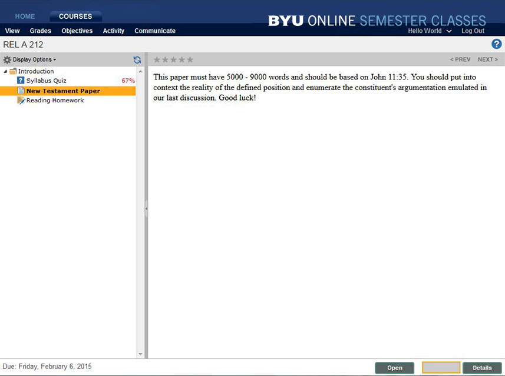

Introduction to Adobe Connect
Scheduling Learning Checkpoints
Scheduling an Exam
Click here to learn how to schedule an exam for a BYU Online Exam.
Click here to schedule an exam for a BYU Online course.

Submitting an Assignment in Brain Honey
- 

Brainhoney Overview
How to View Your Grades in Brain Honey
TA Support
Customer Support
Customer Support
Phone Hours: M-F from 8 a.m. - 8 p.m (MST)
Phone: 1-801-422-1194
Click to Chat
Fax:
Technical Support
Technical Support
Phone Hours: M-F from 8 a.m. - 5 p.m (MST)
Toll-Free: 1-877-897-8085
Local: 1-801-422-8524
Click to Chat